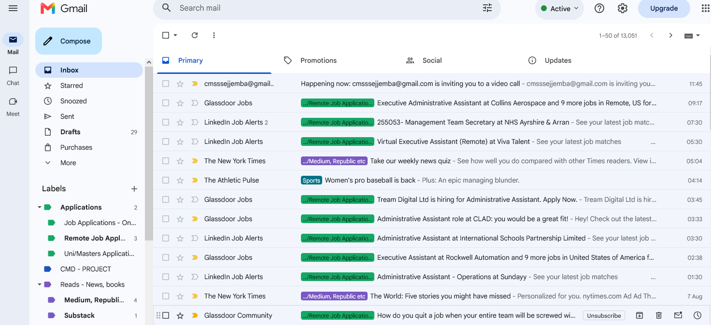
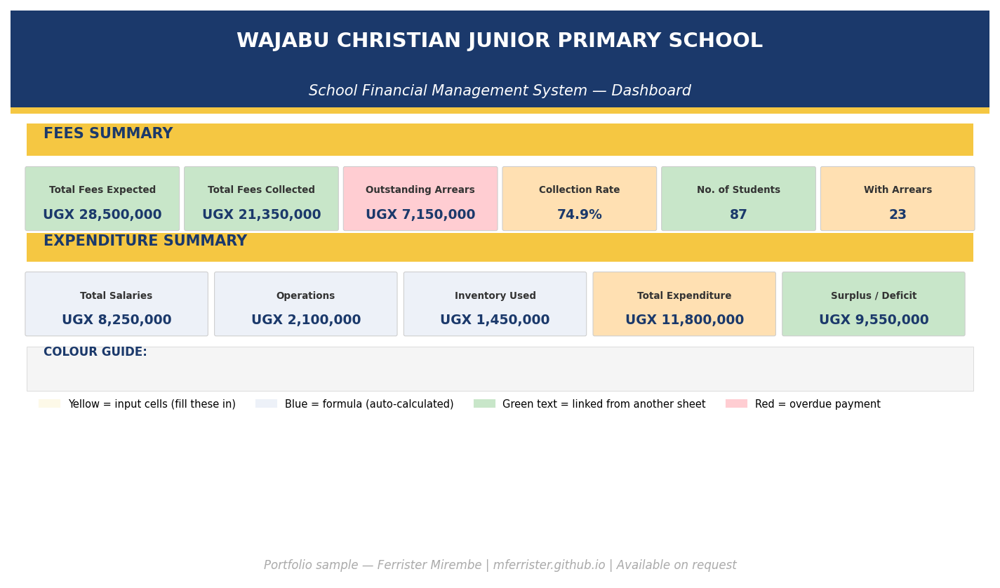
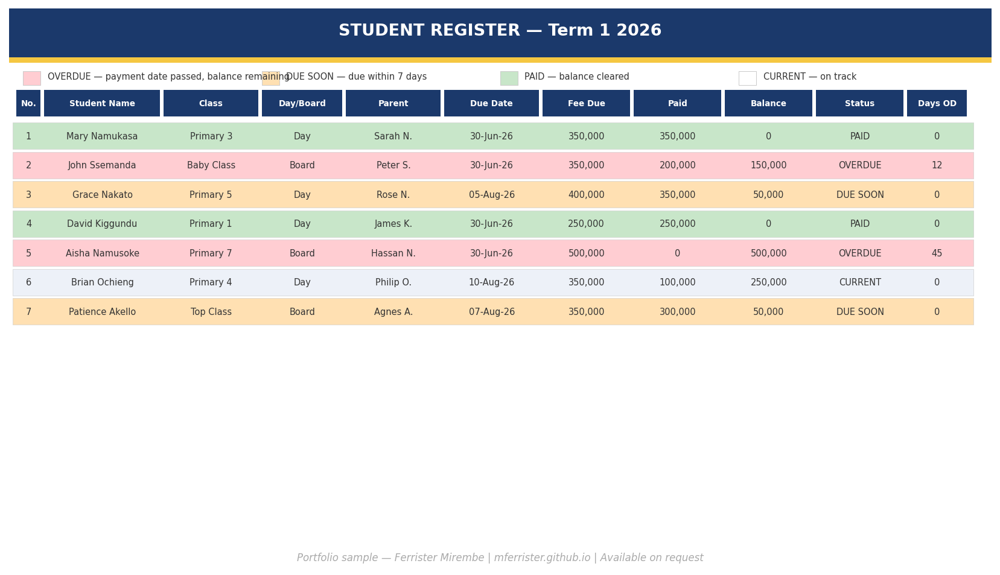
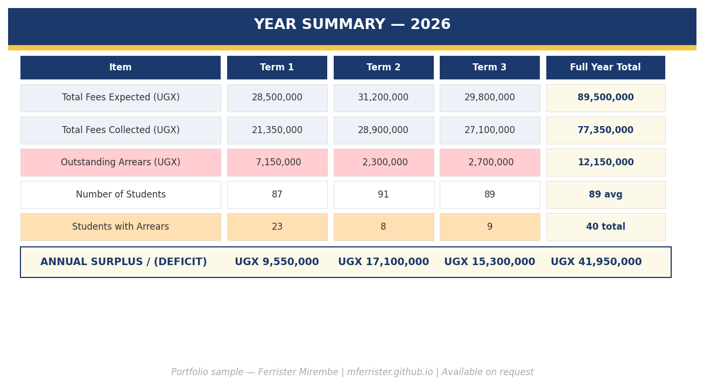

Ferrister in Admin
Building toward remote administrative roles for both local and global teams.
I am an Administrative Assistant with two years of direct experience and a seven-year broader background across education, NGOs, and remote-team environments. I currently manage the full administrative operation of a school in Uganda, supporting two senior directors independently across calendars, correspondence, financial reporting, records, admissions, and stakeholder communications.
Currently I manages the full administrative operation at Wajabu Junior School, calendars, records, correspondence, admissions, and stakeholder communication, while simultaneously providing remote virtual assistant and operations support to clients across Uganda, the African region, and internationally.
Take a look around; my experience, skills, and the work I've been doing are all here. I hope they give you a clear enough picture to want to reach out. I'd love to be part of what helps your team move.
A selection of real work showing how I think and what I can do. More being added regularly.

Personal inbox shown for demonstration.Deeper demonstrations of how I think about systems, operations, and the work behind the work.



Payment details are shared privately after job negotiation and on request only.
Payment details are shared after job negotiation and on request only. The options below are available depending on your location and preference.
Ferrister joined us as Secretary and Administrative Assistant and immediately brought a level of organisation we had not had before. Within her first month she had designed a full term activity calendar and set up an inventory tracking system that we still use today. She manages our correspondence, handles parent communication, coordinates scheduling, and keeps our records accurate without needing to be reminded. She is reliable, discreet, and genuinely invested in the work. I would recommend her without hesitation for any administrative or coordination role.
I worked with Ferrister across two organisations and she consistently delivered work that went beyond what was asked. Everything she produced was professional, well-structured and she always understood what we were trying to communicate and translated that into materials that genuinely represented us well. She is thorough, creative, respective, positive and adjusts to what is needed. I know she would be of great value and a great addition to any team or executive.